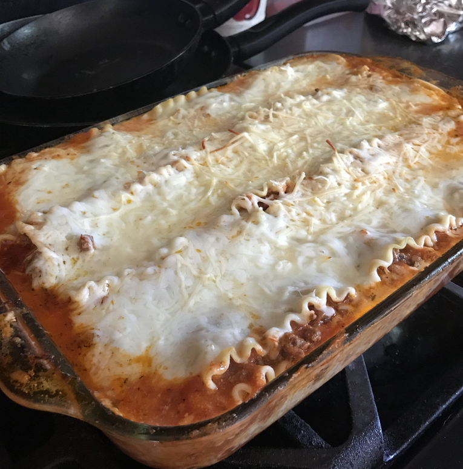

Lasagna

An easy lasagna recipe that saves me lots of time. This recipe is simple
and satisfies everyone in the family. Try it tonight!
Ingredients
Original recipe yields 12 servings
Ingredient Checklist
- 1 pound lean ground beef
- 1 (32 ounce) jar spaghetti sauce
- 32 ounces cottage cheese
- 3 cups shredded mozzarella cheese, divided
- 2 eggs
- ½ cup grated Parmesan cheese
- 2 teaspoons dried parsley
- salt to taste
- ground black pepper to taste
- 9 lasagna noodles
- ½ cup water
Instructions Checklist
-
Step 1
Preheat the oven to 350 degrees F (175 degrees C).
-
Step 2
Warm a large skillet over medium heat. Add ground beef and cook until browned, 8 to 10 minutes. Drain the grease. Stir in spaghetti sauce and simmer for 5 minutes.
- Step 3
Mix together cottage cheese, 2 cups of mozzarella cheese, eggs, 1/2 of the grated Parmesan cheese, dried parsley, salt, and pepper in a large bowl.
-
Step 4
Spread 3/4 cup of sauce in a 9x13-inch baking dish. Cover with 3 uncooked lasagna noodles, 1 3/4 cups of cheese mixture, and 1/4 cup sauce; repeat layers once more. Top with remaining 3 noodles, sauce, mozzarella, and Parmesan cheese. Add 1/2 cup water along the edges of the dish. Cover tightly with aluminum foil.
-
Step 5
Bake in the preheated oven for 45 minutes. Uncover and bake for an additional 10 minutes. Let stand 10 minutes before serving.
Nutrition Facts
Per Serving:
377 calories; protein 29.4g; carbohydrates 26.4g; fat 16.7g; cholesterol 89.5mg; sodium 870.3mg.
Back to Homepage